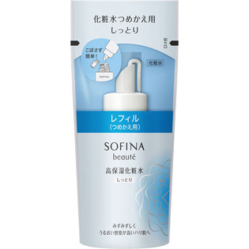

返回列表
产品名称：ソフィーナボーテ 高保湿化粧水 しっとり つめかえ用

花王 ソフィーナボーテ 高保湿化粧水 しっとり つめかえ用 １３０ＭＬ
メーカー 花王
JANコード 4901301325129
商品の特徴
朝夜使用で約２．５ヶ月分
- 成分・分量
- 水、グリセリン、プロパンジオール、DPG、PEG-32、アスナロ枝エキス、チューベロース多糖体、ショウガ根エキス、ユーカリ葉エキス、アミジノプロリン、コハク酸ジグリコールグアニジン、ヒアルロン酸Na、BG、イソセテス-20、PEG-12ジメチコン、ヒドロキシプロピルグアーガム、キサンタンガム、リン酸Na、リン酸2Na、エタノール、フェノキシエタノール、EDTA-2Na、香料
- 用法及び用量
- ＜使用方法＞
適量（直径2．5cmの円に広がるくらい）をやさしく顔全体になじませます。